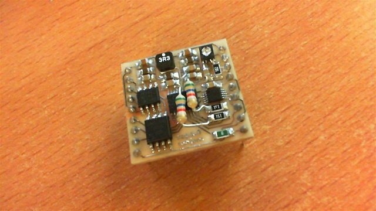
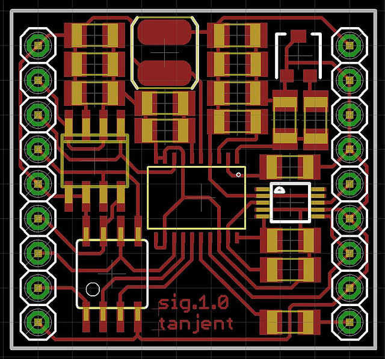

 
I needed a signal generator to test some oscilloscope input stage circuits I was playing with, and I thought it'd be fun to build one from parts.
The main parts are -
plus various passives for filtering & biasing.
The EconOscillator generates a tweakable master clock, the AD9834 turns that into a sine wave (up to ~30 mhz) via a couple of current-output DACs, and the ADA4417 buffers that output, antialiases it, and amplifies it to an nice 1 volt peak-to-peak signal. The ATTiny sends configuration settings to the DDS a few hundred times a second to do frequency sweeps and other stuff depending on what testing I'm doing.
I did hit one annoying problem, which is that the video buffer chip really really doesn't like input voltages that are too close to ground - something in the input stage saturates and the lower side of the sine wave output gets a big notch taken out of it. I fixed this by tacking on some additional (through-hole) bias resistors to pull the input up by a few tens of millivolts - ugly, but it works. If I do another revision of this board I'll replace the EconOscillator with a generic non-programmable oscillator, I'll fix the bias issue, and I'll add a separate voltage regulator to generate a clean power supply for the AD9834 instead of just using a pi filter on the digital supply.
I'd like to add a basic serial console to it so I can send it commands via FTDI cable, but right now you've gotta reprogram the ATTiny to change settings.
The whole board is less than 1 square inch and fits (barely) in a breadboard.